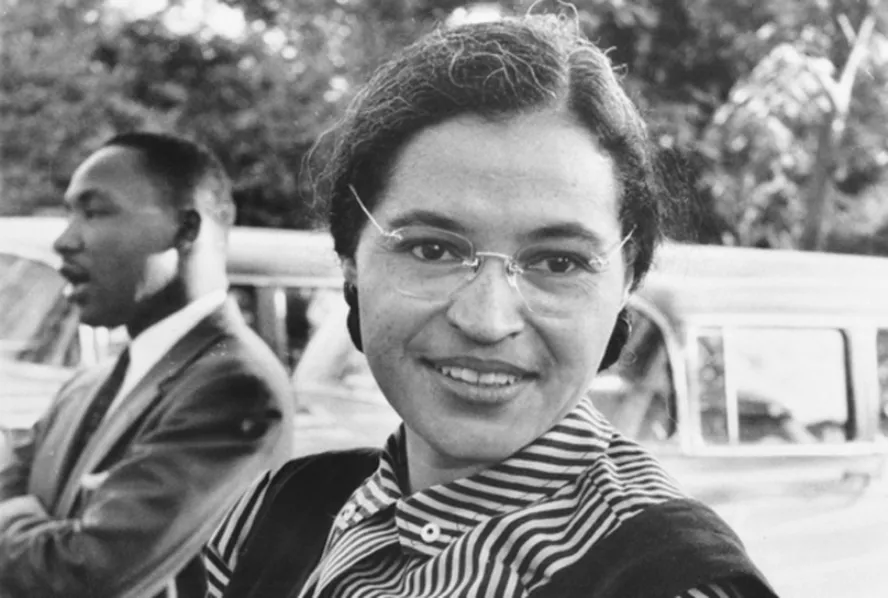

<body bgcolor="Sienna"></body>
 
<link rel="stylesheet" href="style.css">
<center>

</center>

<font size="5">
<h1>Dia da Consciência Negra: conquistas e lutas pelo fim do racismo</h1>


<p>No mês de novembro, celebramos a Consciência Negra, sendo o dia 20 de novembro uma data para relembrar as lutas dos movimentos negros pelo fim da opressão provocada pela escravidão. Essa data refere-se à morte de Zumbi, importante líder do Quilombo dos Palmares, situado no Nordeste do Brasil. O Dia da Consciência Negra também não nos deixa esquecer de que este país é marcado pelos quase 350 anos de duração da escravidão e do tráfico das populações negras da África para o Brasil.</p>

<p>Apesar dos 134 anos da lei que deu fim à escravidão, o racismo continua presente nas estruturas sociais e institucionais deste país e é manifestado pela falta de oportunidades para pessoas negras, por baixa remuneração, pelas tentativas de apagamento da cultura e da participação africana na construção da nação brasileira e pelo epistemicídio acadêmico de negros e negras, entre outras formas de apagamento e de violência.
Ainda temos um longo caminho a trilhar, e a Ufes está engajada na luta pelo fim do racismo. É importante destacar algumas conquistas das comunidades negras, especialmente no que concerne às ações afirmativas que têm sido implementadas. A começar pela Constituição brasileira, de 1988, de cuja construção vários atores da sociedade, incluindo os movimentos negros, participaram ativamente, que traz medidas importantes para a promoção de reparações à comunidade negra.

<p>Dentre essas, destacamos a lei que definiu os crimes de preconceito de raça ou cor (nº 7.716, de 5 de janeiro de 1989), surgida a partir dos novos princípios constitucionais, e a Lei nº 10.639, de 9 de janeiro de 2003, voltada para a educação básica, que instituiu a obrigatoriedade do ensino de história e cultura afro-brasileiras. Essas são legislações reparatórias, mas ainda precisamos avançar em ações afirmativas que contemplem maior presença negra em todos as esferas sociais.</p>

<p>Os resultados obtidos tanto para as universidades quanto para a sociedade permitem defender a continuidade da reserva de vagas e o aperfeiçoamento da Lei nº 12.711/2012, a fim de que seja assegurado não somente o ingresso, mas a permanência dos estudantes na universidade, para que consigam concluir sua trajetória acadêmica com qualidade. A Ufes mantém um programa de assistência estudantil que contribui para essa finalidade, e pretende poder continuar fortalecendo-o, como tem feito nos últimos anos.</p>

<p>Também há a preocupação de que se promova com mais ênfase a inclusão epistemológica das questões étnico-raciais. O Plano de Desenvolvimento Institucional (PDI) da Ufes, aprovado para os próximos nove anos, e o Projeto Pedagógico Institucional (PPI) da Universidade incluem importantes avanços no que diz respeito à necessidade de alterações epistêmicas nos conteúdos das disciplinas e nas políticas de ensino, pesquisa e extensão, para que contemplem as temáticas étnico-raciais.</p>

<h1>Frases de personalidades negras sobre consciência negra</h1>


<p>Eu era uma pessoa com dignidade e respeito próprio, e não deveria me considerar pior que qualquer outra pessoa só porque era negra. (Rosa Parks)
</p>


<ul>
    <li><a href="index1.html"> Rosa Parks</a></li>

</ul>
<p>inguém nasce odiando outra pessoa pela cor de sua pele, por sua origem ou ainda por sua religião. Para odiar, as pessoas precisam aprender, e se podem aprender a odiar, elas podem ser ensinadas a amar. (Nelson Mandela)</p>
                                                                                                                                                                                                                                 

<p> Eu tenho um sonho que meus quatro pequenos filhos um dia viverão em uma nação onde não serão julgados pela cor da pele, mas pelo conteúdo do seu caráter. (Martin Luther King)</p>


</font>
